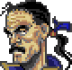
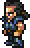

 Cyan Garamonde, Samurai who hails from the kingdom of Doma.

A noble warrior of a foreign land. A faithful retainer to his lord and master, he fears not even death...
My Resources:
My Stats
My Bestiary
Esper Info
My totally not broken strat: